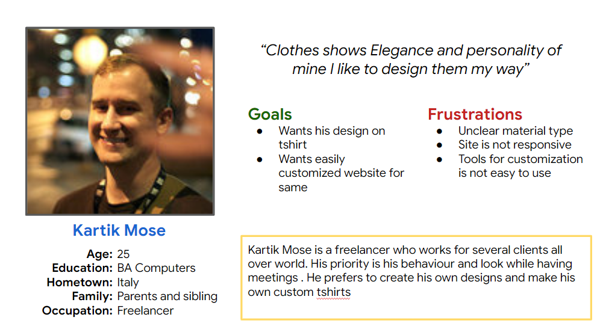
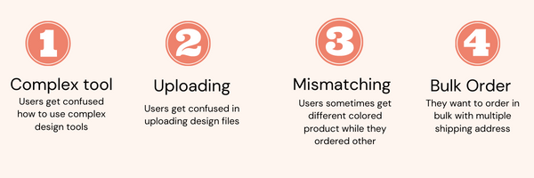
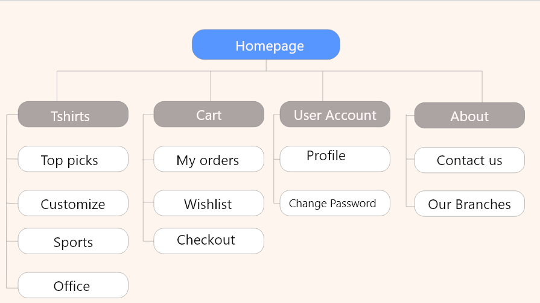

Project Overview
Luxamine is a custom T-shirt printing resonsive website.It allows users to select the fabric of their choice and dye it with any color and print designs and illustrations on them thry can upload their designs and buy thier own tshirts.
My role and responsibilities:
I was responsible for designing an Impression website from conception to delivery with the tasks like Ux research, Empathize, Ideation, Usability studies, Wireframing, design of high fidelity, Prototyping, and accountability for accessibility.
The Problem
T-shirt printing is a creative thing. It is mainly done by non-designers when it comes to ordering for businesses and corporates. They usually find difficulty in using design tools to make designs. Even they struggle with placing a design file provided by the designer on a t-shirt.
The Process:

Design Thinking Framework
During the project, I had followed the design thinking framework. It is a way to create a user-centered approach to problem-solving. It helps to address a real user problem, which is functional and affordable. There are five phases in the process.
1.Empathize
2.Define
3.Ideate
4.Prototype
5.Test
Each phase of the framework answers a specific question. The framework continues after initial Low fidelity designs for further iterations and high fidelity design to make them more user-centered.
Emphatize and Define

Problem Statement:
Kartik is a freelancer who needs An easy designing tool to customize his t-shirt because he wants to make more creative and intuitive designs.
Hypothesis statement:
If he can design his t-shirt easily with fewer efforts, then he can experiment with his clothes according to his style.
User Story:
As a freelancer and design enthusiast, I want to design my t-shirts to experiment with my clothing so that I can present my design and personality altogether.
Pain Points:
Ideation
The ideation process is a journey towards the brainstorming of possible solutions. It consists of competitive analysis, competitive reports, Crazy 8 exercise, storyboarding, user flow, and Information Architecture of an app.
Competitive Analysis
The goal of the analysis was to compare user experience and features of competitor’s websites. It had analyzed with direct competitors like iLogo, yourPrint, inkmonk, Vistaprint. They all were direct competitors and had different business perspectives and a variety of items in their buckets.The complete competitive analysis can be view here.
Ideation Exercises on Paper

SiteMap
Wireframe Ideation

I had designed some ideations for the home screen on paper. Selected some elements from the ideations and finalized a design for the home screen and shop screen. Also, a responsive design for tablets and mobile has been shown below.
Key Features from Wireframe


Usability Study
An initial wireframe is tested with potential users by a usability study. It was conducted remotely in India. The usability study revealed some valuable insights, and it made me understand how minute details can change the user’s perspective! The process and details related to the usability study are present below.
Derivatives from Usability Study


Insights

Before and After Usability Study


Mock Up Screens
After few iterations for low fidelity wireframes and usability research, come up with polished high fidelity designs. Some of the design screens are present here. Can check out all design screens from an embedded window.
Prototype
A prototype of high fidelity mockup with interactions can be view by the link below.
Takeaways
During the course of the project, I had learned so many new things and processes in detail. It is my first project, and I had enjoyed it thoroughly. Empathizing with users differently without any biases and guidance is very important to get good outcomes from the research. I had also learned the importance of the users’ thought processes. It can change from user to user. How minor things and details can change conception from the user’s point of view! It is also necessary that you come up with equitable and inclusive solutions. For this project, iteration is a continuous process. Also, usability study should be at every stage of the design, which helps to understand users and pain points. It also helps you in up to date with trends in the market
Next Steps
1. Conduct usability studies to make sure that solutions address the pain points of users.
2. Design and iterate on group bookings for corporates and personals.
3. Do more research to find new needs of users and find the scope of improvements.